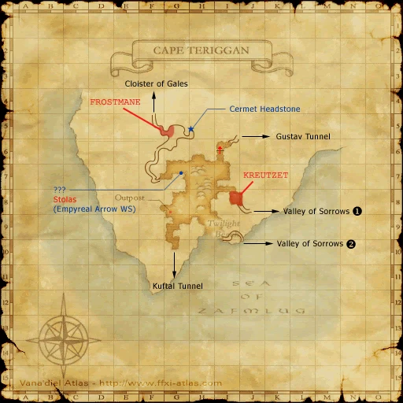
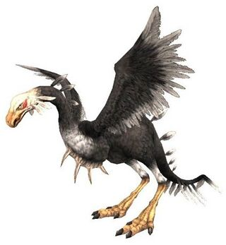
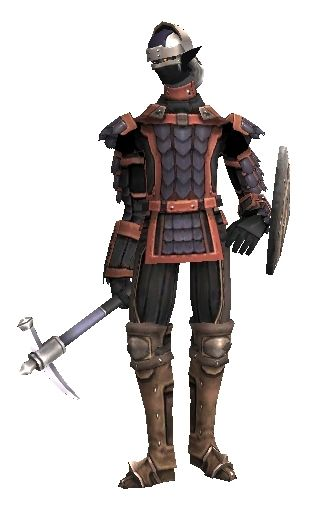
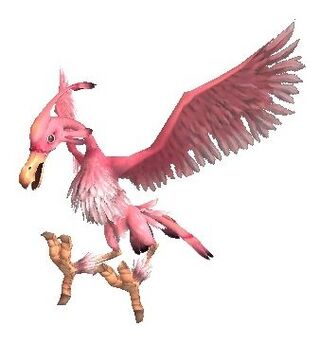
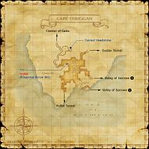

Description
Cape Teriggan is an outdoor area in Vollbow.
Map

Involved in Quests / Missions
| Quest / Mission | Type | Starter | Location |
|---|---|---|---|
| Cape Teriggan/Expeditionary Force | Expeditionary Force | --- | --- |
| From Saplings Grow | Weapon Skill | Perih Vashai | Windurst Woods (K-7) |
| Cape Teriggan/Garrison | Garrison | --- | --- |
| Nothing Matters | General | Koru-Moru | Windurst Walls (E-7) |
| Wandering Souls | General | Headstone | Cape Teriggan (H-5) |
NPCs
| Name | Location | Type |
|---|---|---|
| Bright Moon | pos=G-8 | Outpost Merchant |
| Dultwa, I.M. | pos=I-6 | Conquest Overseer: Bastok: Outland Guard |
| Sarmistha, I.M. | pos=G-8 | Conquest Overseer: Bastok: Outpost Guard |
| Paise, R.K. | pos=I-6 | Conquest Overseer: San d'Oria: Outland Guard |
| Salimardi, R.K. | pos=G-8 | Conquest Overseer: San d'Oria: Outpost Guard |
| Orukeke, W.W. | pos=I-6 | Conquest Overseer: Windurst: Outland Guard |
| Voranbo-Natanbo, W.W. | pos=G-8 | Conquest Overseer: Windurst: Outpost Guard |
Notorious Monsters
| Name | Level | Drops | Steal | Family | Spawns | Notes |
|---|---|---|---|---|---|---|
| Frostmane | 80 | Lockheart Manticore Fang Manticore Hair Manticore Hide | — |  ManticoresImage source ManticoresImage source | — | A, S, Sc |
| Kreutzet | 79 | Giant Bird Feather Giant Bird Plume Sirocco Kukri | — |  RocsImage source | — | A, L, S, H |
Regular Monsters


Event Monsters
| Name | Level | Drops | Steal | Family | Spawns | Notes |
|---|---|---|---|---|---|---|
| Axesarion the Wanderer | 69-70 | — | — |  ShadowsImage source | — | Spawned Mission: Headstone Pilgrimage |
| Stolas | 80 | — | — |  BirdsImage source | — | Spawned Quest: From Saplings Grow |


EXP camps
Arrival and hazards
Northern staging book. Travel toward the outpost/lower-level hunting area; manticores near this book are too strong for the lower end of this range.
Story walkthroughs in this area
| Story | Mission / quest |
|---|---|
| RoZ 5 | Headstone Pilgrimage |
| ASA 4 | Sugar-coated Directive |
References
External references describe their own server or retail rules. Documented Zenith changes take precedence.
Map credits: Map 1 — HorizonXI Wiki. Original game maps © SQUARE ENIX; redrawn maps retain the credited authorship and license.

Additional level-75 reference


|
This penninsula on the extreme western edge of the Quon continent is accessible only via one of two underground tunnels. The Gustav Tunnel leads to the Valkurm Dunes, still on the Quon continent, whereas the Kuftal Tunnel leads to the Western Altepa Desert on Zepwell Island. The penninsula is home to a large number of Goblins, Cockatrice and Manticores. |
Connecting Areas
- Cloister of Gales at (F-4)
- Valley of Sorrows at (I-9, J-8)
- Kuftal Tunnel at (G-10)
- Gustav Tunnel at (I-4) Note: Access is one-way.
If you see a quest that is listed as Yes but is not working properly please report it on GitHub. Make sure to list as many details as possible when describing what is not working. If there happens to already be a report on that quest regarding your problem, just add your experience to that report.
Legend
Yes = Quest is in game and working
Yes but bugged = Quest is in game but not working properly and being worked on or in que to be worked on.
No = Not in game yet but is planned
Involved in Quests/Missions
|
Quest |
Type |
Starter |
Location |
Available? |
| EF: Cape Teriggan | Expeditionary Force | --- | --- | |
| From Saplings Grow | Weapon Skill | Perih Vashai | Windurst Woods (K-7) | |
| Garrison/Cape Teriggan | Garrison | --- | --- | |
| Wandering Souls | General | Headstone | Cape Teriggan (H-5) | No |
| Mission | Country | Starter | Location | |
| Zilart Mission 5:Headstone Pilgrimage | Zilart | --- | --- | |
NPCs Found Here
|
Weather
Fishing
| ||||||||||||||||||||||||||||||||||||||||||||||||||


Notorious Monsters Found Here
| Name | Level | Drops | Steal | Family | Spawns | Notes |
|---|---|---|---|---|---|---|
| Axesarion the Wanderer
|
69 - 70 | Shadows | 1 | |||
| Frostmane
|
80 | Lockheart Manticore Fang Manticore Hair Manticore Hide |
Manticores | 1 | ||
| Kreutzet
|
79 | Giant Bird Feather Giant Bird Plume Sirocco Kukri |
Rocs | 1 | ||
Stolas
|
80 | Birds | 1 |
|
HP = Detects Low HP; M = Detects Magic; Sc = Follows by Scent; T(S) = True-sight; T(H) = True-hearing JA = Detects job abilities; WS = Detects weaponskills; Z(D) = Asleep in Daytime; Z(N) = Asleep at Nighttime |
Mobs Found Here
|
HP = Detects Low HP; M = Detects Magic; Sc = Follows by Scent; T(S) = True-sight; T(H) = True-hearing JA = Detects job abilities; WS = Detects weaponskills; Z(D) = Asleep in Daytime; Z(N) = Asleep at Nighttime |
Adapted from Eden Wiki: Cape Teriggan · Contributors and history · CC BY-SA 4.0. Revision 45941. Layout, links and optional background text adapted for Zenith.